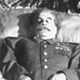
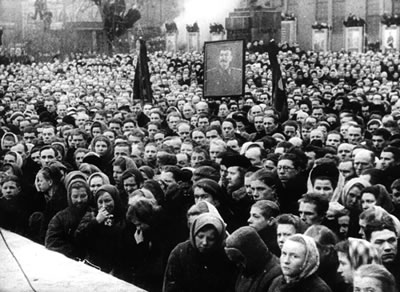
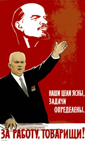

Josef Stalin died on March 5, 1953. The Gulag had reached its maximum size of more than three million.
Convinced that forced labor was inefficient and wasteful, Stalin’s successors immediately moved to curb the size of the system by issuing an amnesty that released over one million non-political prisoners. The political prisoners left behind in the camps engaged in a series of mass uprisings in 1953 and 1954, which contributed to the decision to reduce the size of the Gulag further.

Mass meeting held at a factory in Leningrad after Stalin’s death, March, 1953.
Courtesy of the Central Russian State Film and Video Archive.The new Soviet leader Nikita Khrushchev, despite his own personal involvement in carrying out Stalin’s terror, moved to ease Soviet repression. In addition to continuing the reduction of the Gulag’s size and curbing political repression, Khrushchev took limited but definitive steps to denounce Stalin in a 1956 declaration.
In 1962, this "thaw" went even further as Khrushchev authorized open discussion of the Gulag. He allowed Aleksandr Solzhenitsyn to publish his novella One Day in the Life of Ivan Denisovich in the journal Novyi Mir. This description of one typical day in a Gulag camp is read around the world to this day. The "thaw" in Soviet culture was only temporary, as Khrushchev was deposed in 1964 and the subject of the Gulag once again became a forbidden topic until the 1980s.

“Our goals are clear. Our tasks are certain. Get to work, comrades!”
Khrushchev denounced Stalin and attempted to tie his own policies to the first Soviet leader, Vladimir Lenin.
Courtesy of the Gulag Museum at Perm-36.